Midjourney 调研
特别说明：本文展示的所有图片都经过了大幅度的缩小和压缩处理，并非原图。
模型版本
使用 --version 或 --v 参数来指定版本。
- v5.2：该版本有更好的颜色、对比度和结构，有略微更好的文本理解能力。对
--stylize参数响应度更高。特别地，如果不想要 Midjourney 的默认审美风格，可以加参数--style raw. - v5.1：该版本有更强的默认审美，因此使用比较简单的 prompt 就能达到很好的效果。它能与 prompt 保持很高的一致性，生成的图像更清晰（sharp），还支持一些新的特性，例如
--tile参数（详见下文）。特别地，如果不想要 Midjourney 的默认审美风格，可以加参数--style raw. - v5：相比 v5.1，v5 版本生成的图像会更像摄影，但需要更长的 prompts 来描述。
- Niji Model 5：Midjourney 和 Spellbrush 合作微调的版本，专注于日本漫画风格（anime style），使用时只需在 prompt 后添加
--niji 5即可，还可以使用--style参数得到更细分的风格。
官网的例子我就不放了。这里展示我自己尝试的一个例子：
| prompt | v5.2 | v5.1 | v5 |
|---|---|---|---|
| a cup of latte | 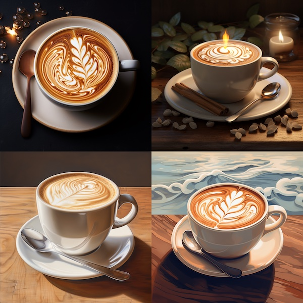 | 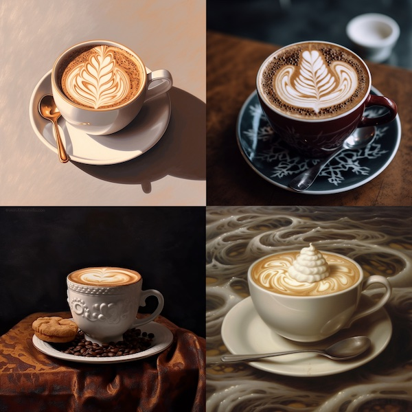 | 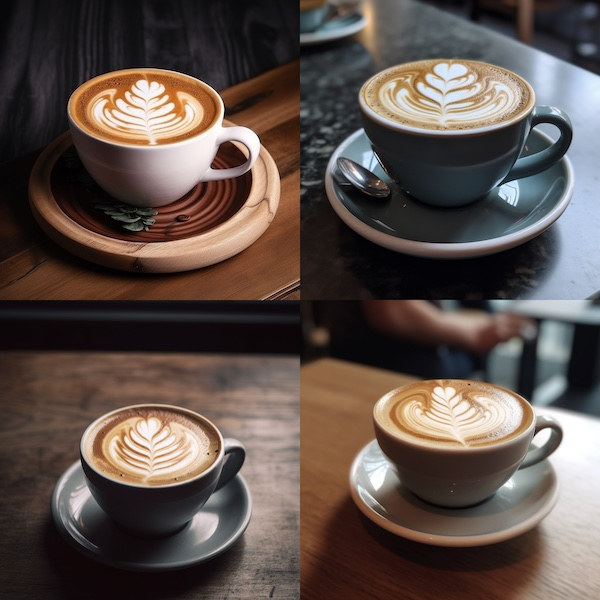 |
| v5.2 raw | v5.1 raw | niji 5 | v4 |
| 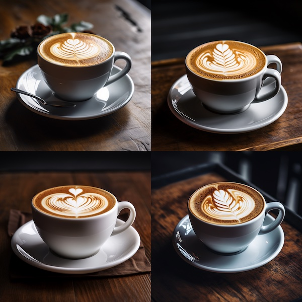 | 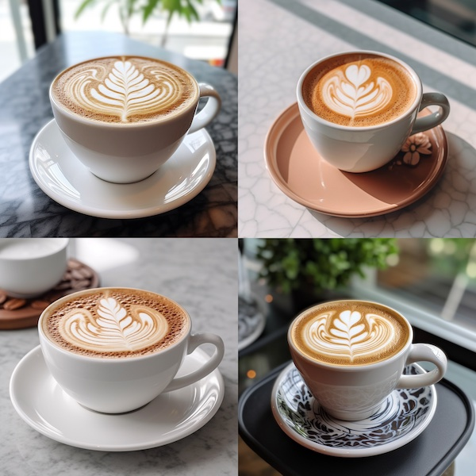 |

|
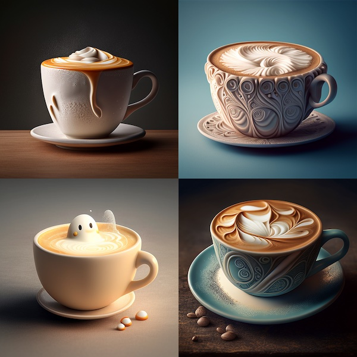 |
可以看出：
- v5.2/v5.1/v5 相比 v4 确实有质的飞越，前者的光影、反射比后者精致不少。面对粗糙的 prompt，v5.2/v5.1/v5 能自动添加勺子、桌子、背景绿植、咖啡豆等元素，使得画面更为丰富；相比之下，v4 基本真的就只是一杯拿铁。
- v5.2/v5.1 更偏艺术作品（所谓的默认审美）；而 raw 和 v5 都更加真实、更偏摄影照片。
基础功能
/imagine <text prompt>
返回 4 张图片拼成的 grid，可以点击 U1/U2/U3/U4 来增大某张图片的分辨率（但是对于 v5 以上版本，默认返回的就是 1024x1024 的图，U 按钮不起超分作用，只是把这张图片单独分离出来）；可以点击 V1/V2/V3/V4 来基于某张图片做变化（variation）；可以点击 🔄 按钮重新生成。
生成速度：
- Fast 模式：40s 左右
- Relax 模式（排队）：3min 左右，具体时间取决于队列长度
来自官网的 Prompting Tip：使用简单、短小的句子，不要提很多很长的要求。例如，
- ❌ Show me a picture of lots of blooming California poppies, make them bright, vibrant orange, and draw them in an illustrated style with colored pencils
- ✔️ Bright orange California poppies drawn with colored pencils
| 冗长的 prompt | 精简的 prompt |
|---|---|
| 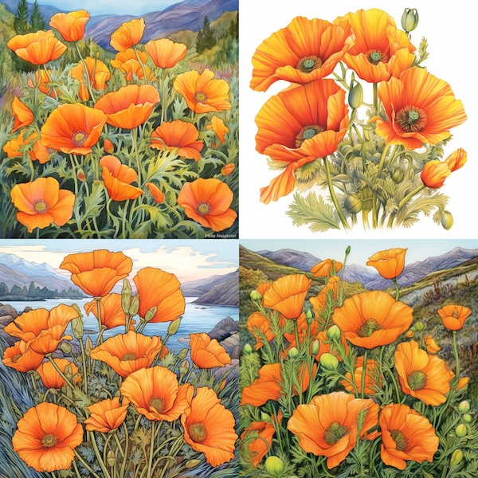 | 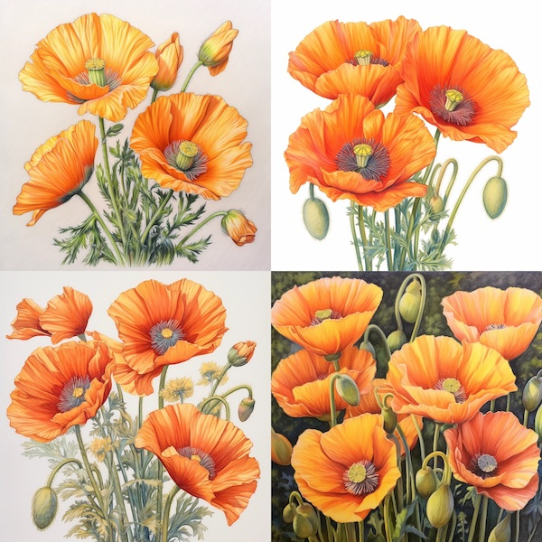 |
实测感觉差别不是很大～
/blend
混合 2-5 张上传的图像。所谓混合，即提取每张图像的概念和风格，生成一张新的图像。
| input image 1 | input image 2 | output images |
|---|---|---|
| 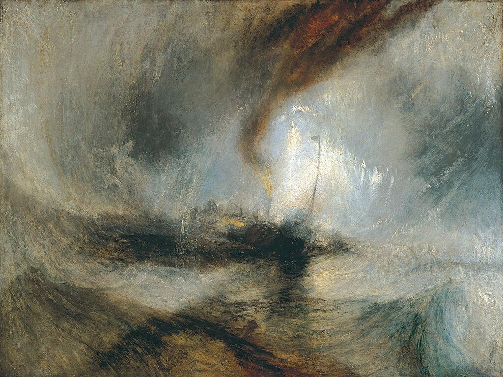 | 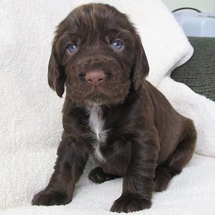 | 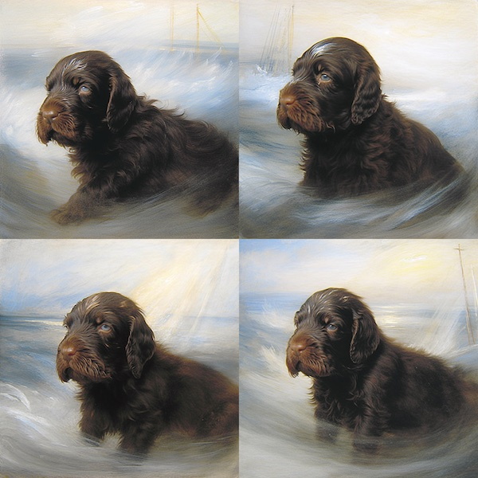 |
其中第一张输入图像是英国画家 Turner 的著名画作「Snow Storm: Steamboat off a Harbour's Mouth」。可以看见，Midjourney 保留了第二张输入图像的主体（黑色小狗），并试图加上第一张图像的风格以及背景。经测试，交换图片顺序并不会影响生成结果。
| input image 1 | input image 2 | output images |
|---|---|---|
| 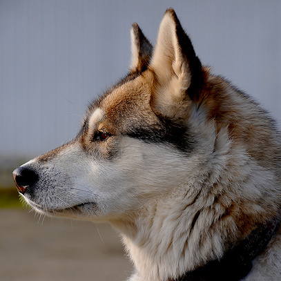 | 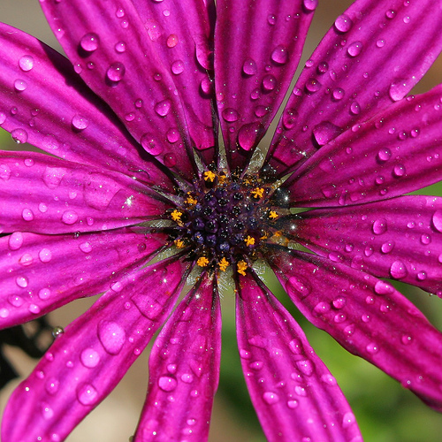 | 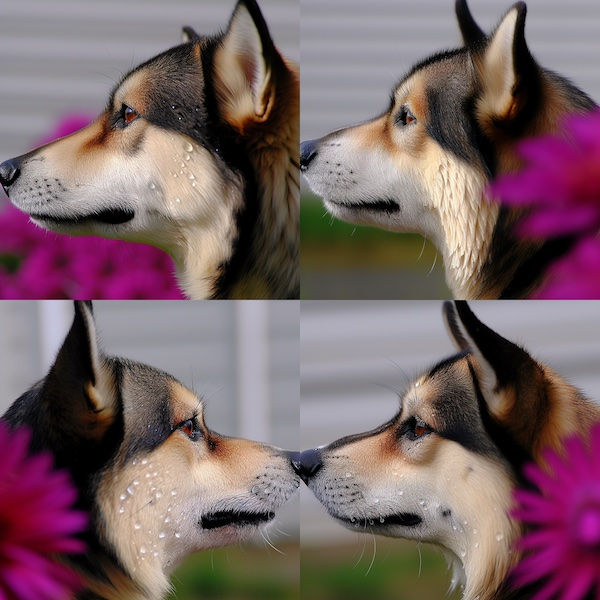 |
第一个例子中一张图片风格比较明显，另一张主体比较明显，那如果两张图片都是主体呢？这个例子中，可以看见输出图片把二者放在了一起，但其中一个主体更为突出；更有意思的是，它把花儿上的水滴画在了哈士奇的脸上，某种程度上算是一种风格融合。
| input image 1 | input image 2 | output images |
|---|---|---|
| 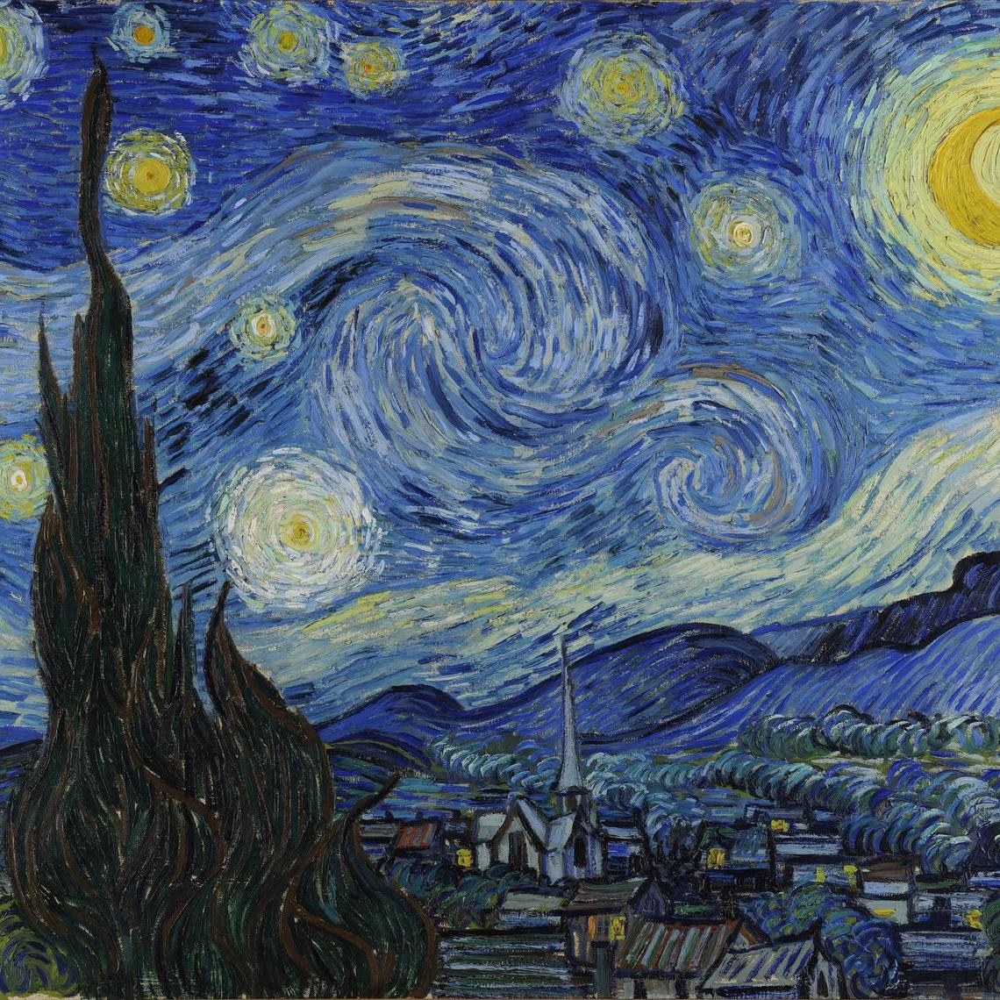 | 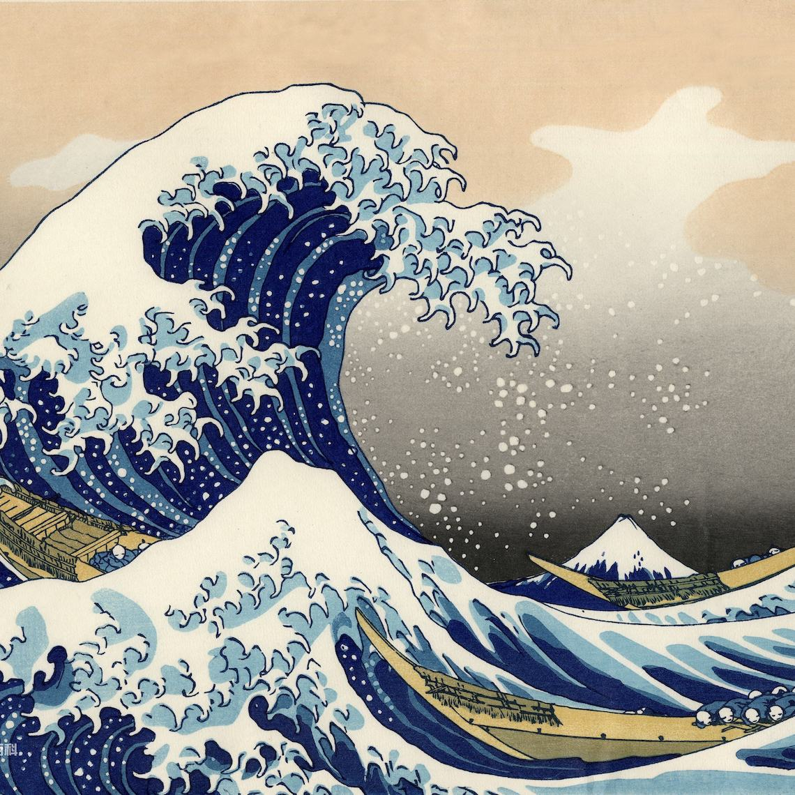 | 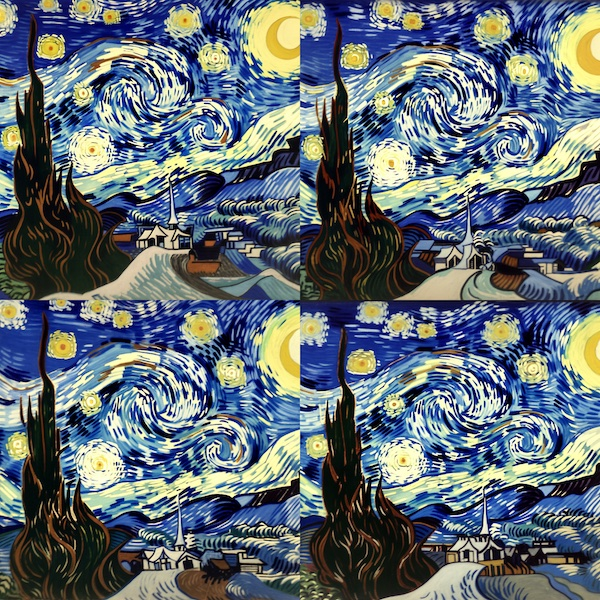 |
无论顺序如何，Midjourney 总是以《星月夜》为整体构图，可如果我想要星月夜式的神奈川怎么办呢？
| input images | output images | |
|---|---|---|
| 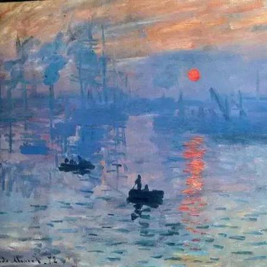 | 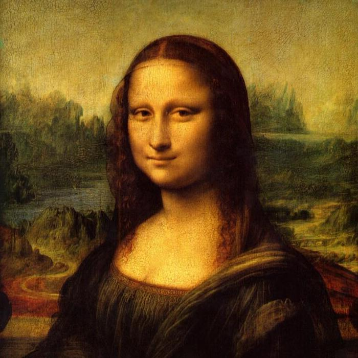 | 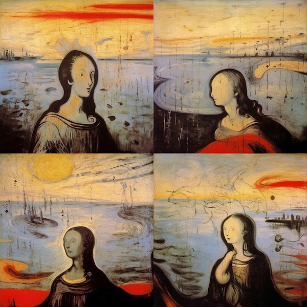 |
| 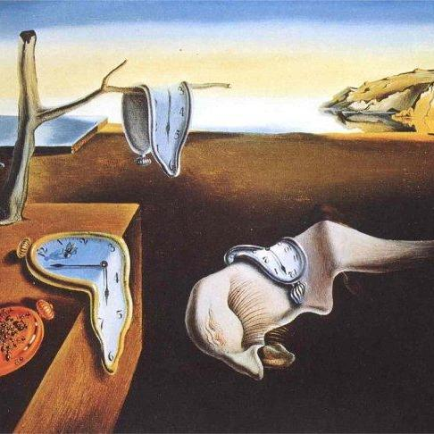 | 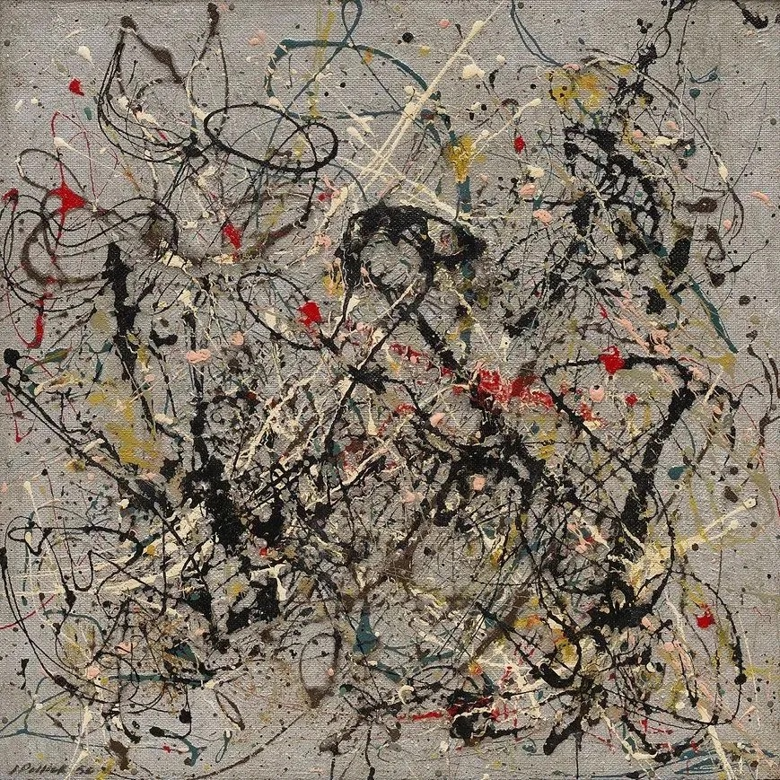 | |
来个艺术作品大杂烩……呃……好吧😑
总而言之，不太清楚 /blend 命令会提取哪张输入图片的什么特征进行融合，因此可能不能生成用户期望的结果。
/describe
返回 4 个描述上传的图像的 prompts，可以用这个方法来学习新的词汇和写 prompt 的方式。点击 1️⃣ 2️⃣ 3️⃣ 4️⃣ 按钮即可使用对应的 prompt 去生成图像，注意这并不意味着用返回的 prompt 就能够重新生成这张上传的图像。
图-文-图测试：上传一张图像，用 /describe 功能得到文字描述，再用这一段描述去生成图像，对比输入输出图像。
|
input image & re-generated images |
output prompts |
|---|---|
|
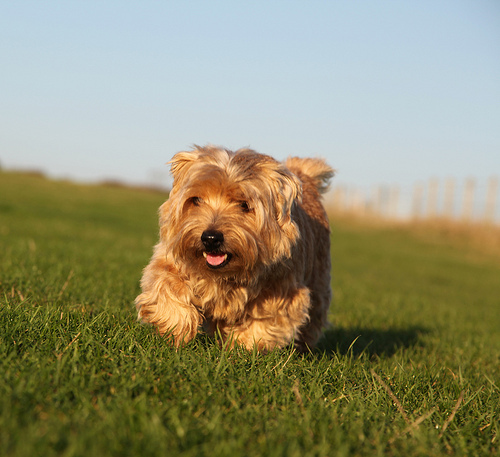 ⇩ 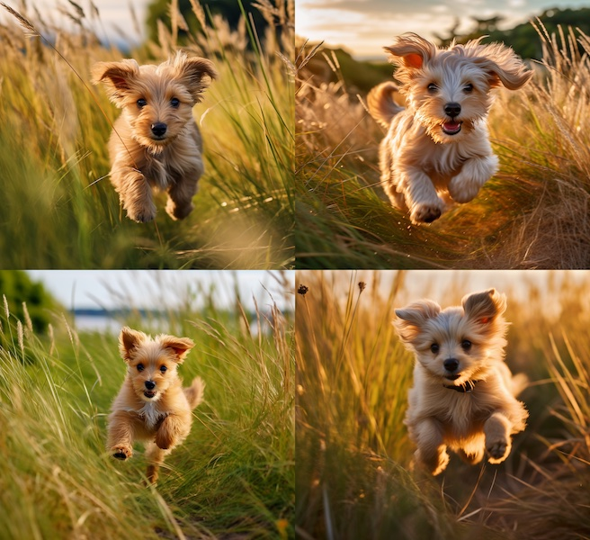 |
a brown terrier in the field, in the style of lively action poses, flickr, hasselblad 1600f, soft lighting, striped, joyful --ar 62:57 |
| a puppy running through grass outdoors, in the style of hasselblad hc 100mm f/2.2, suffolk coast views, flickr, playful caricature, light brown and light amber, spiky mounds, bold lines, vibrant color --ar 62:57 | |
| a small dark brown dog running through the grass, in the style of danish golden age, flickr, hasselblad 1600f, suffolk coast views, joyful and optimistic, soft lighting --ar 62:57 | |
| a beautiful field, in the style of petcore, dynamic pose, flickr, amber, toyism, walter langley, alpo jaakola --ar 62:57 | |
|
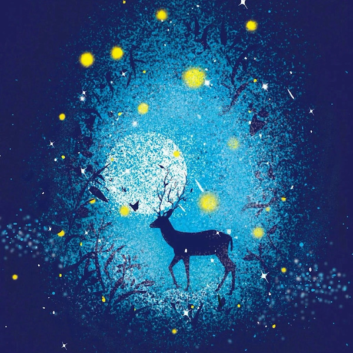 ⇩ 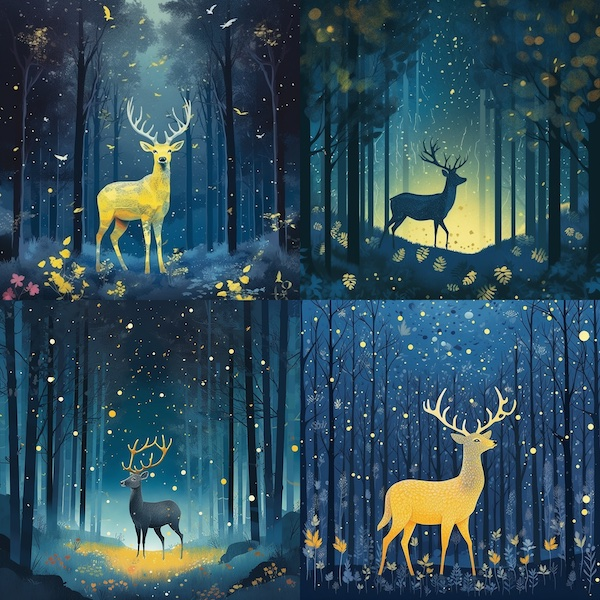 |
deer in the night, blue moon and stars on an illustration, in the style of dark yellow and light blue, made of insects, nature-inspired installations, sparklecore, lith printing, light installations, joyful celebration of nature |
| hudson rebecca deer at the moon with night sky, in the style of dark azure and yellow, roger dean, glittery, luminescent installations, joyful celebration of nature, jonathan wolstenholme, the stars art group (xing xing) | |
| a deer standing in the forest at night in the moonlight, in the style of sky-blue and yellow, dan matutina, damien hirst, glittery, joyful celebration of nature, richard doyle, wallpaper | |
| deer of the night, teddy bear, forest in the light, in the style of dark sky-blue and yellow, silhouettes in space, splattered paint, i can't believe how beautiful this is, tangled nests, made of insects, characterful animal portraits |
（加粗的 prompt 是我选择用来重新生成图片的 prompt）
可以看见，Midjourney 给出的 prompts 一般遵循以下模式：首先一句话描述画面内容（a puppy running through grass outdoors），然后描述风格（in the style of lively action poses），对摄影作品加上相机品牌和参数（hasselblad 1600f）、图库（flickr），然后描述颜色和光影（soft lighting、light brown and light amber），描述整体情绪（joyful and optimistic），还可以加上艺术家名字（walter langley、alpo jaakola）或时代（danish golden age）。
另外，使用这些 prompt 重新生成的图片，风格和主题与输入图像一致，但是内容差异较大。因此，这个功能的价值更多地在于获取高端上档次的 prompt.
进阶功能
Zoom out
v5.2 版本新增功能，用于扩大图片。在使用 /imagine 生成 4 张图片后，使用 U 按钮分离出其中一张，就可以看到 zoom out 按钮。值得注意的是，该功能并不会对图片分辨率有大的改动，仅是画幅增大。
该功能又分为几个子功能：
- Zoom Out 2X：扩大 2 倍，上下左右都会扩展
- Zoom Out 1.5X：扩大 1.5 倍，上下左右都会扩展
- Make Square：将非正方形图片扩展为正方形
- Custom Zoom：点击后弹出一个输入框，可以通过
--ar参数自定义长宽比、通过--zoom参数自定义扩大倍数（取值范围 1~2）。特别地，当取--zoom为 1 时，相当于在使用--ar来调整长宽比。另外，还可以在此处更改 prompts.
所有功能都会返回 4 张图片。
Image prompts

如图所示，/imagine 命令其实不仅仅接受文本，还接受图像的 URL，从而生成类似于给定图像的新图像。事实上，上文介绍的 /blend 命令就是其简化版本，相当于只允许输入 image prompts 的 /imagine 命令。特别地，对于本地图像，将其粘贴到对话框中发送出去，就可以在 discord 里面复制其 URL 了。
参数 --iw 可以调节图像的参考权重（image weight），对于 v5 版本，权重范围 0~2，默认为 1.
以下是我尝试的一个例子，参考图像为一只黑白相间的鸟，文本 prompt 为 "mechanical cyberpunk bird"，在不同 --iw 参数下结果如下（w/o 代表没有 image prompt，作为对照组）：
| image prompt | w/o | iw=0.0 | iw=0.2 |
|---|---|---|---|
| 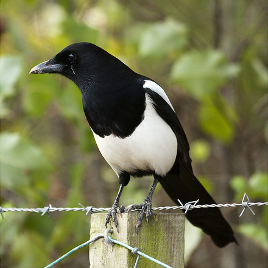 | 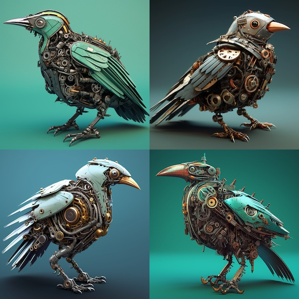 | 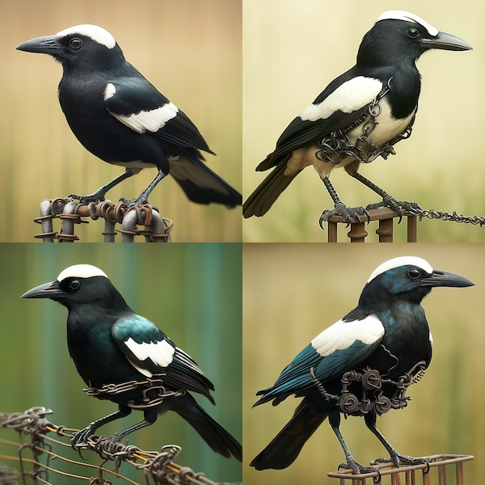 | 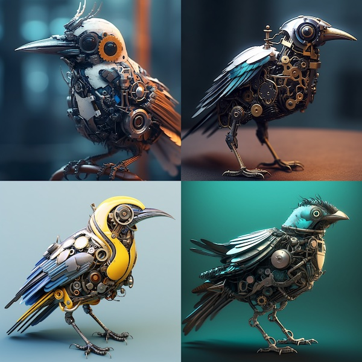 |
| iw=0.5 | iw=0.8 | iw=1.0 | iw=2.0 |
| 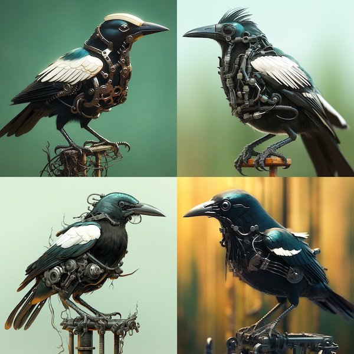 | 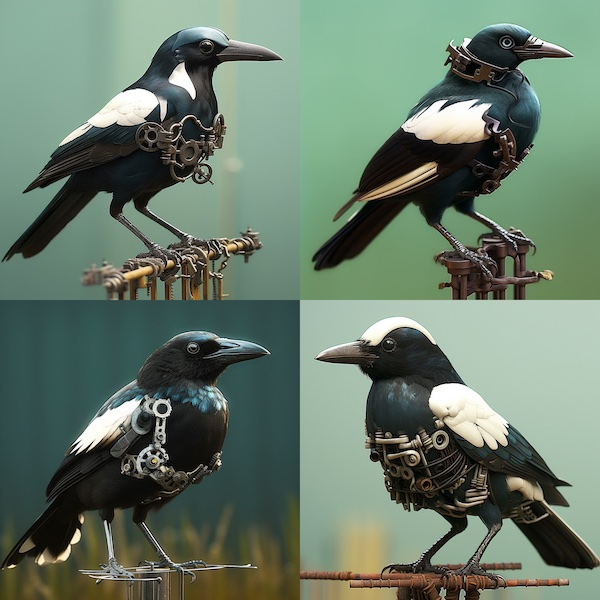 | 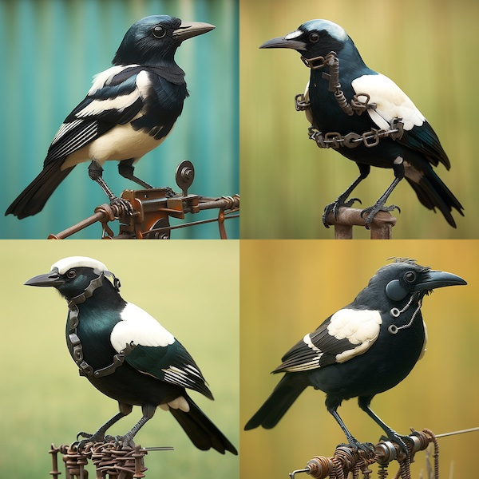 | 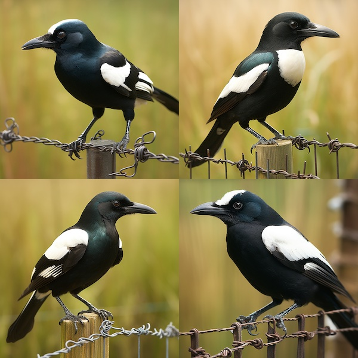 |
可以观察到：
- 一般而言，
iw越大，生成图像与参考图像越接近；iw越小，生成图像与文本描述越接近。但是iw=0是一个例外，原以为 0 意味着完全不参考图像，等价于 w/o，结果它生成的图像反而接近iw=1的效果，也许是一个 bug； - 鸟的朝向并不会保持与输入图像一致，这一点很奇怪；由于 Midjourney 并没有公布任何技术细节，我只能猜想他们在训练时给图像条件加了水平翻转的增强。
Multi prompts
基础用法是用 :: 分隔 prompt，强制让 Midjourney 分别独立地考虑 :: 前后的两个词。
官网举了一个形象的例子：hot dog v.s. hot:: dog，我这里尝试了另一个例子：
| dragon fly | dragon:: fly |
|---|---|
| 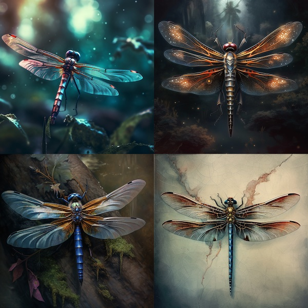 | 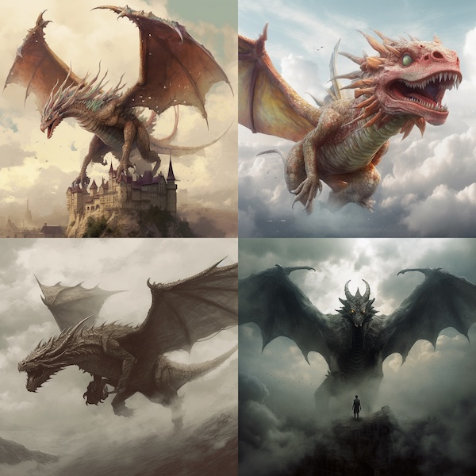 |
果然，前者被理解为了蜻蜓，而后者被理解为了飞龙。
进一步地，可以在 :: 后面加上数字来调整词语的权重，比如 hot::2 dog 就是“非常”热的狗。承接上文，我试了试不同权重下的 dragon:: fly：
| dragon::5 fly:: | dragon::2 fly:: | dragon:: fly::2 | dragon:: fly::5 |
|---|---|---|---|
| 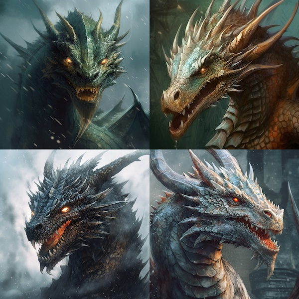 | 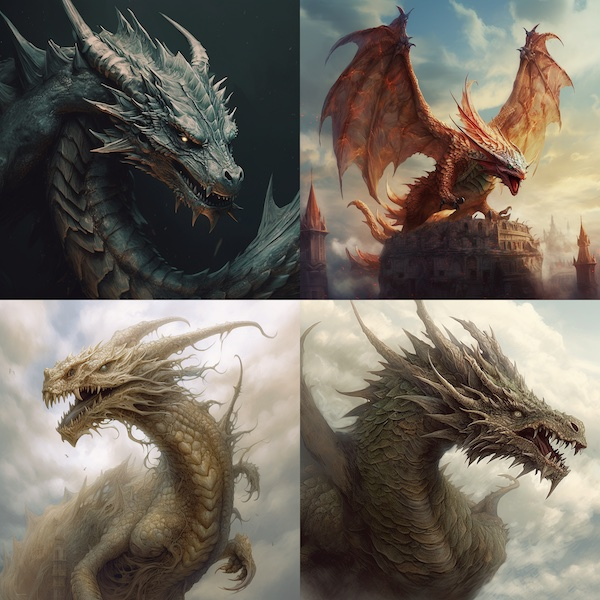 | 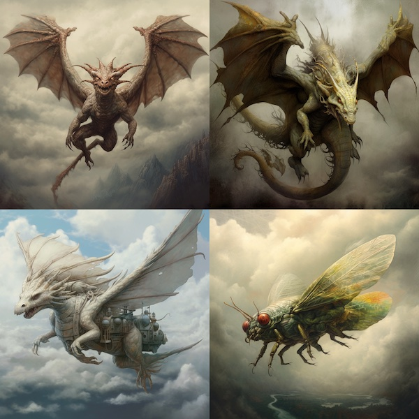 | 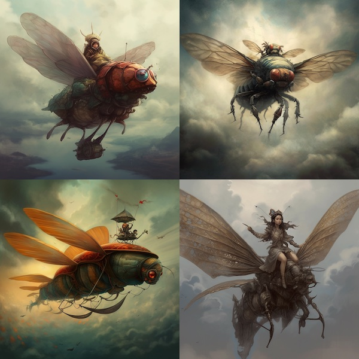 |
可以看见，5:1 的权重下，所有龙都不飞了；2:1 的权重下，有些龙不飞；1:2 的权重下，龙飞得更张扬了，而且还有一张图把 fly 理解成了苍蝇；而 1:5 的权重下，fly 全被理解成了苍蝇，所有图都跟龙没啥关系了。
以上权重都是正数，也可以使用负数权重来去除不想要的元素。更方便地，使用 --no 参数相当于把对应词汇的权重设置为 -0.5.
| dragon:: fly --no sky | dragon:: fly:: sky::-1.5 |
|---|---|
| 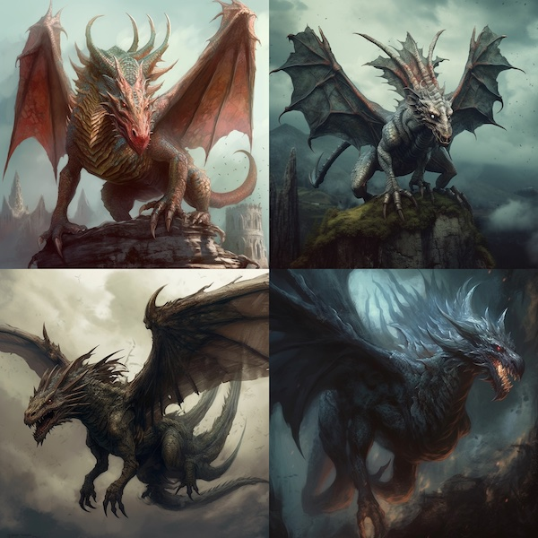 | 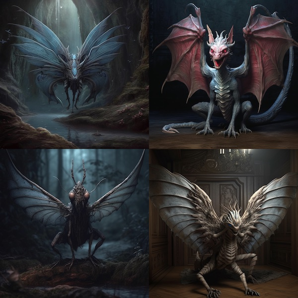 |
使用 --no sky 之后，前两只龙都变成了落在岩石上，但第三只龙还明显在天上；加强负数权重后，不管是龙也好苍蝇也好，都落在了地上，fly 一词主要体现在张开的翅膀上，还是蛮有意思的吼。
参数
上文中我们已经用到了一些参数，比如 --version (--v) 指定模型版本、--style 指定某版本下的细分风格、--iw 控制参考图像的权重、--no 去除不想要的元素等。本小节将介绍更多的参数。由于参数很多，就不一一尝试了，相关示例请查看官网。
下表摘取自 Midjourney 官网：
| Affects initial generation | Affects variations + remix | Ver. 5 | Ver. 4 | Niji 5 | |
|---|---|---|---|---|---|
| Max Aspect Ratio | ✓ | ✓ | any | 1:2 or 2:1 | any |
| Chaos | ✓ | ✓ | ✓ | ✓ | |
| Image Weight | ✓ | .5–2 default=1 | .5–2 default=1 | ||
| No | ✓ | ✓ | ✓ | ✓ | ✓ |
| Quality | ✓ | .5–2 | .5–2 | .5–2 | |
| Repeat | ✓ | ✓ | ✓ | ✓ | |
| Seed | ✓ | ✓ | ✓ | ✓ | |
| Stop | ✓ | ✓ | ✓ | ✓ | ✓ |
| Style | raw | 4a, and 4b | cute, expressive, original and scenic | ||
| Stylize | ✓ | 0–1000 default=100 | 0–1000 default=100 | 0–1000 default=100) | |
| Tile | ✓ | ✓ | ✓ | ✓ |
--aspect或--ar：指定长宽比。v5 版本已经能够支持任意长宽比，但是官网有一句提示：「大于 2:1 的长宽比是实验功能，可能生成不可预测的结果」。结合非正常比例的图像耗时更长的现象，我猜想大于 2:1 的图像是依靠 outpainting + 滑动窗口实现的。--chaos或--c：有没有发现上面展示的图片中，每个 grid，也即每跑一次得到的 4 张图都比较相像？这是因为没有指定chaos参数，自动取默认值为 0 了。chaos参数范围在 0~100 之间，其值越大，grid 中的 4 张图片就越不一样。结合扩散模型的原理——采样过程中前期时间步控制构图、后期时间步控制高频细节，不难猜想其实现原理。--quality或--q：控制图像质量，质量越高耗时越长。猜想应该是依靠改变采样步数实现的，甚至可能会用不同的采样器。--repeat或--r：反复多次跑一个任务。结合--chaos可以用来快速探索。--seed：固定随机种子。--stop：在采样过程中途停下来，返回模糊的图片（不出意外的话就是扩散模型每步预测的 \(\mathbf x_0\)）。--stylize或--s：Midjourney 的模型被训练得偏好于艺术性的色彩、组成和形式。stylize参数决定这种“艺术性”的强弱。--tile：生成的图像能够像瓷砖那样无缝拼接。
常见问题测试
以下测试均在 v5.1 版本上进行。
属性对应/绑定
| A yellow book and a red vase | A smooth ball and a fluffy cube |
|---|---|
| 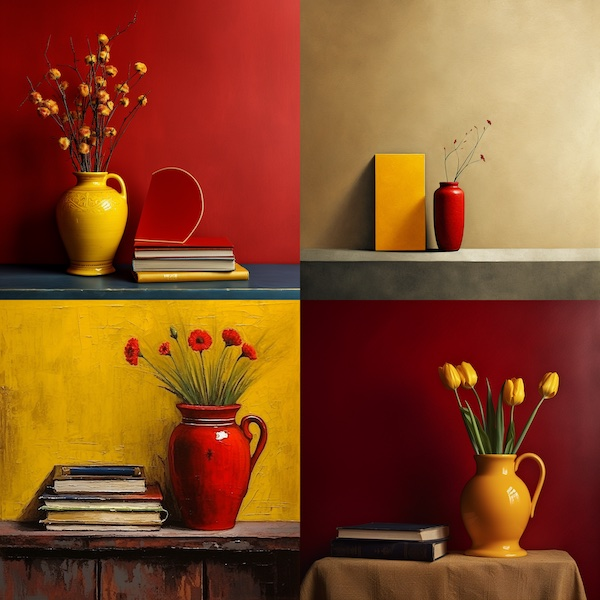 | 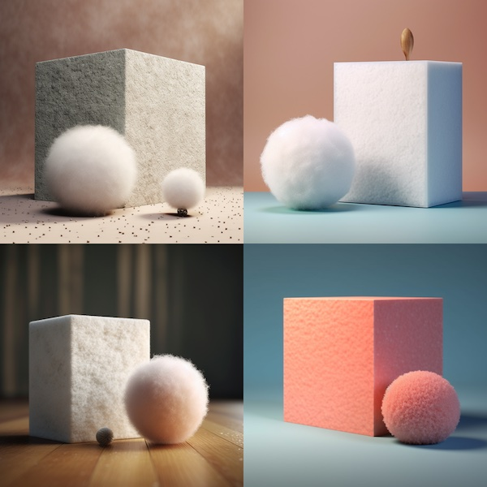 |
Midjourney 并不总能正确绑定物体的属性，例如颜色错乱（黄色的花瓶）和材质错乱（毛茸茸的球）。
位置关系
| A glass of milk on the left of a giant cookie | A wine glass on top of a dog |
|---|---|
| 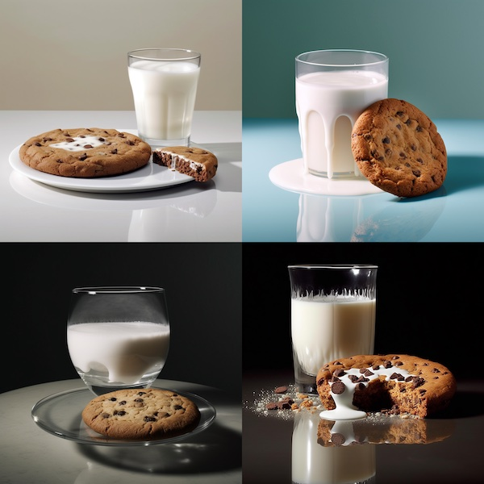 | 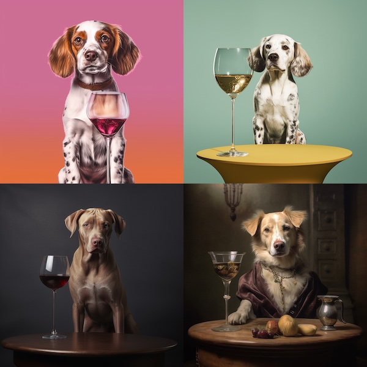 |
Midjourney 并不能正确处理物体之间的位置关系。
对象缺失
| A cat and a dog finding shells on the beach | A Tyrannosaurus rex chasing a Triceratops in the forest |
|---|---|
| 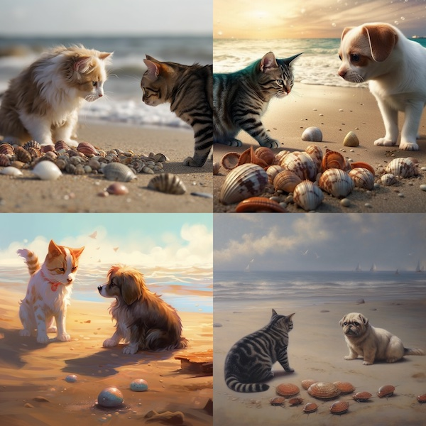 | 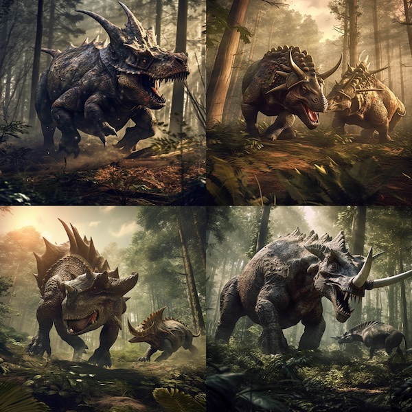 |
Midjourney 有时会缺少指定的对象，例如第一个例子的第一张图片缺少了狗。而第二个例子不止是对象缺失那么简单，霸王龙和三角龙莫名其妙地被融合在了一起，虽然挺有意思，但毕竟不符文意。
数量测试
| One cat and two dogs sitting on the grass | Four horses galloping across the grassland at sunset |
|---|---|
| 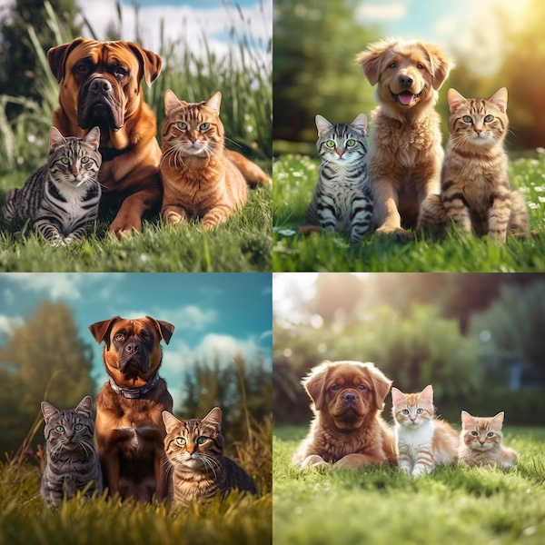 |
Midjourney 并不能正确处理物体的数量。第一个例子明明是要一只猫和两只狗，但给的是一只狗和两只猫（当然这也有可能是属性绑定的问题）；第二个例子有时候只画了三匹马。
书写文字
| A thick hardcover book titled "Midjourney" | An ice sculpture of letter "M" |
|---|---|
Midjourney 并不能正确书写文字。在第一个例子中，第一幅图意识到了 "Midjourney" 是书的标题，但无法正确拼写出来；其他图片都把 Midjourney 当成了描述性词汇，把书的封面绘制成了旅程地图（莫名想到魔戒）。在第二个例子中，前两幅图把字母 M 弄成了 N，后两幅图也怪怪的。
人物群像
| Messi, Suarez and Neymar celebrating a wonderful goal, photorealistic, canon 5d,1fujifilm xt100,Sony alpha, face shot --v 5 | a study group in university discussing around a round table, laptops, caffe --v 5 |
|---|---|
手指和胳膊惨不忍睹；当人物距离较远时，脸部会扭曲变形。
小结
其实前五个问题都与文本编码器有很大关系。根据 GLIDE、DALL·E 2 和 Imagen 的论文，使用 CLIP 作为文本编码器时会有属性无法对应、无法书写文字等问题，而 T5 的表现会好很多，甚至像 GLIDE 那样从头训练一个 Transformer 都会在属性绑定问题上表现得更好。所以可以不负责任地猜想一下，Midjourney 团队有可能使用的是 OpenCLIP 的预训练文本编码器。
ChangeLog
2023.06.27：增加对 v5.2 版本的介绍，包括 zoom out 功能。